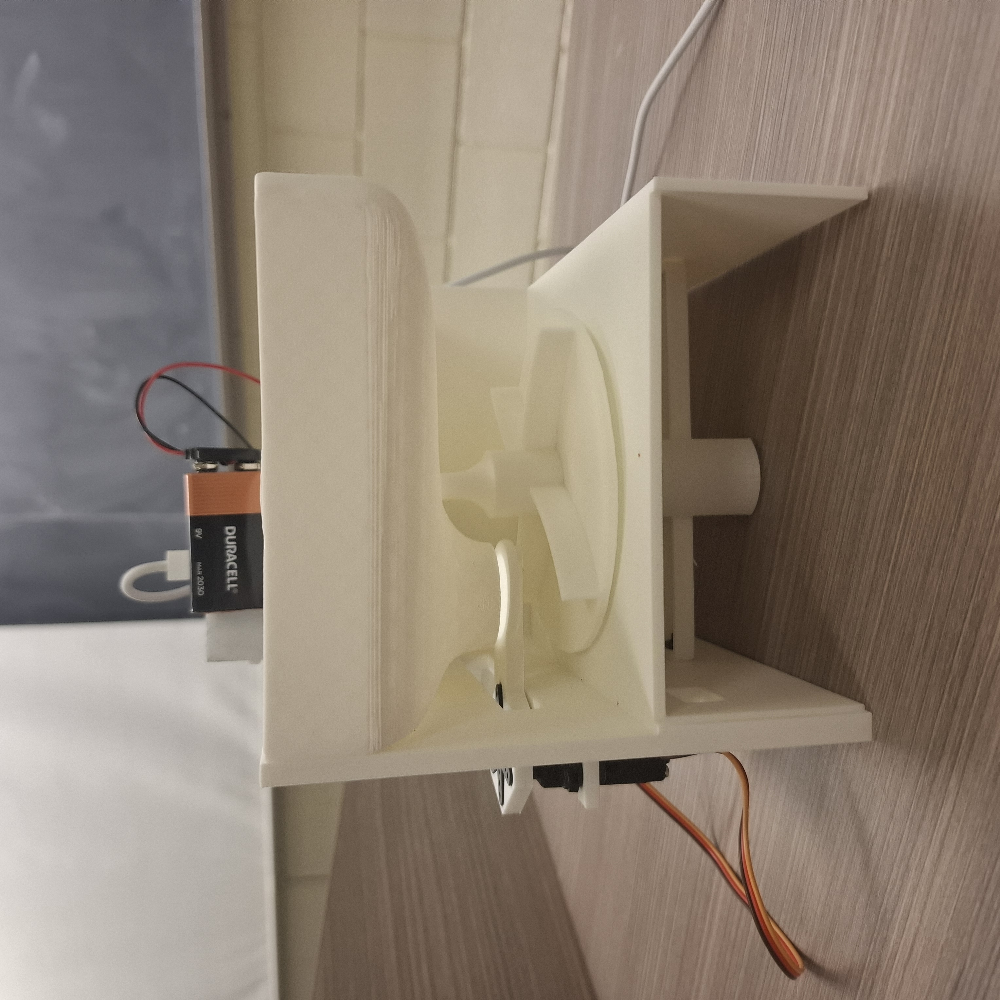
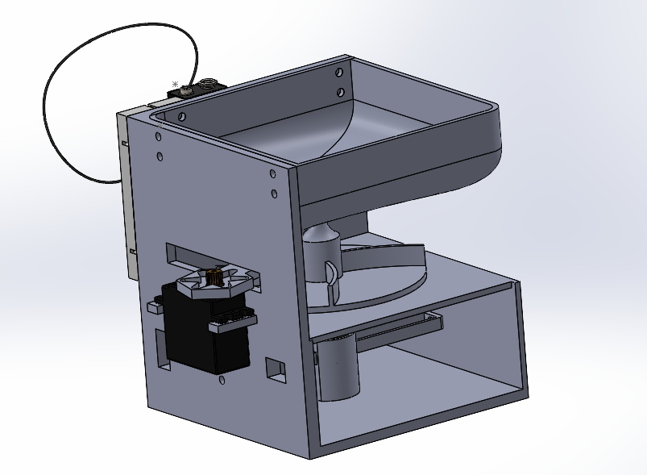
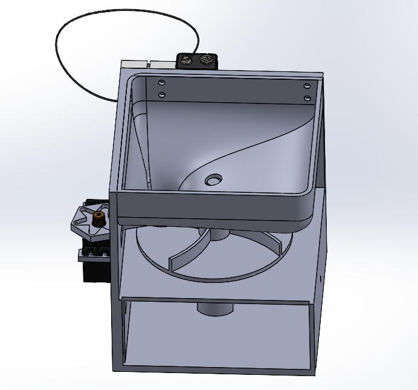
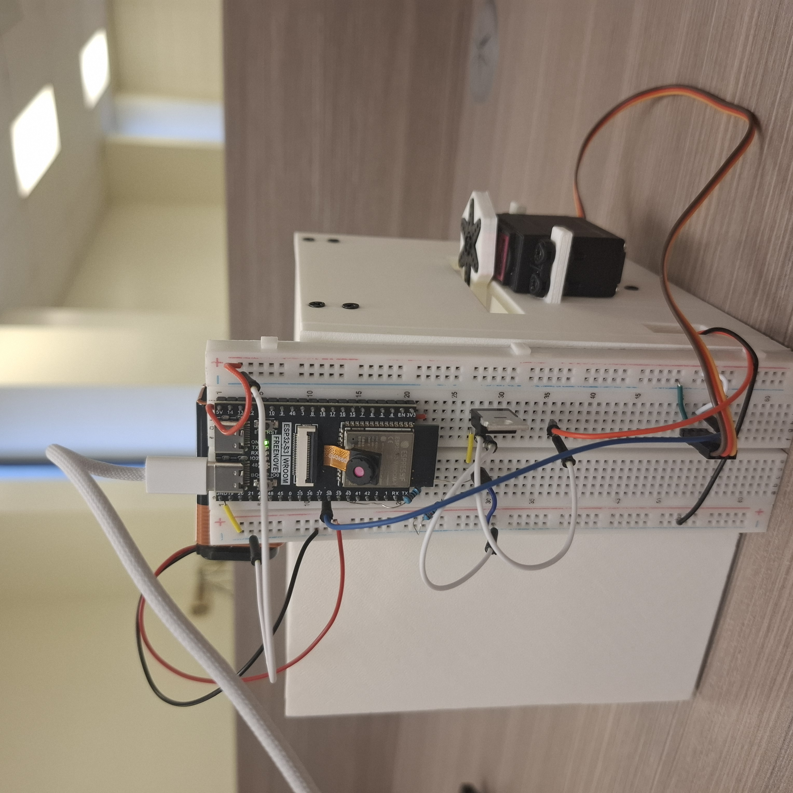
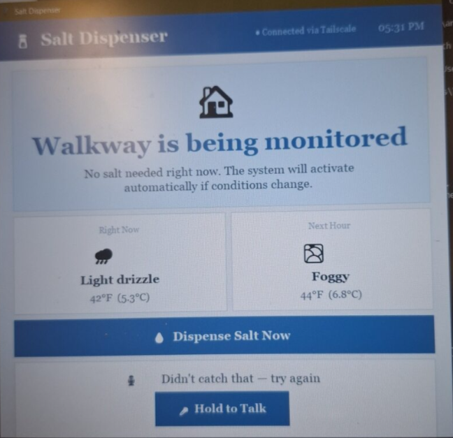

AutoThaw is an ESP32-based automatic driveway salt dispenser that eliminates the need to manually salt your driveway before a snowstorm. It pulls live weather API data to detect incoming freezing conditions and autonomously triggers salt distribution — no manual intervention needed.

The entire enclosure was designed from scratch in SolidWorks and 3D printed. The DC motor was mounted into the dispenser hub using a press interference fit with tight tolerances, ensuring zero slop in the drivetrain without any fasteners. The enclosure was designed around the electronics, keeping the assembly compact and weather-appropriate.


Powered by a 9V battery driving the DC motor through the ESP32, the firmware is written in C++ and handles weather API polling, motor control logic, and network communication. Tailscale was used to expose the device securely over the network, enabling remote monitoring and control from anywhere.

A Python backend ties the system together — integrating the Gemini API for intelligent decision-making on when conditions warrant dispensing, and ElevenLabs for voice alerts. The result is a system that thinks, speaks, and acts on its own.

AutoThaw pushed me to think across the full stack simultaneously — mechanical tolerancing, firmware logic, and API integration all had to work together. Getting the interference fit right took several print iterations, and integrating multiple external APIs taught me how to architect software around unreliable network conditions.